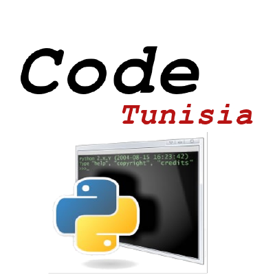
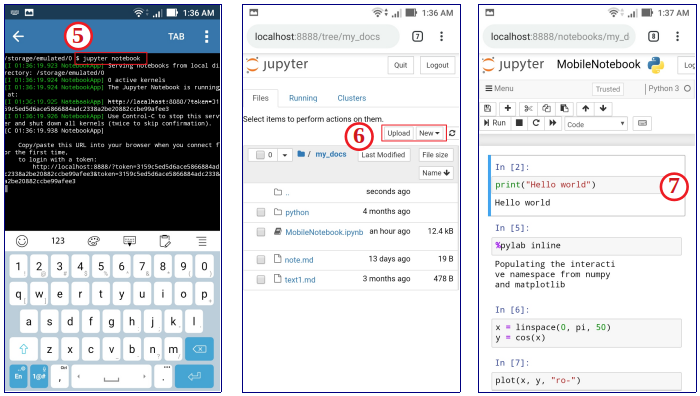

Objectifs généraux en premier
Situation standard que nous rencontrons quotidiennement
Langage Python
Installation d'un environnement Python scientifique
Installation sur ordinateur
Installation sur smartphone
Toutes les notes de cours et les TP sont accessibles à partir de la page Web: https://codetunisia.github.io/CoursSimNum/

Une partie essentielle de ce cours est de vous permettre de faire de la science par des expériences numériques et de développer des projets qui vous permettent d'étudier des systèmes complexes. Le but est d'améliorer ce que nous appelons la pensée algorithmique.
Algorithme Un ensemble fini d'instructions non ambiguës qui, étant donné un ensemble de conditions initiales, peuvent être effectuées dans une séquence prescrite pour atteindre un certain but.
La situation standard que nous rencontrons presque tous les séances de cours:
Une bonne présentation des résultats obtenus via de bons rapports scientifiques, aide à inclure tous les aspects ci-dessus.
Python est un langage de programmation moderne de haut niveau, orienté objet et d'usage général.
Caractéristiques générales de Python :
L’installation d’un environnement Python complet peut-être une vraie galère. Déjà, il faut télécharger Python et l’installer. Par la suite, télécharger un à un les packages dont on a besoin. Parfois, le nombre de ces librairies peut-être grand.
Par ailleurs, il faut s’assurer de la compatibilité entre les versions des différentes packages qu’on a à télécharger. Bref, ce n’est pas amusant.
Finalement, Anaconda propose un outil de gestion de packages appelé conda. Ce dernier permettra de mettre à jour et installer facilement les librairies dont on aura besoin pour nos développements.
Nous demandons à tous les étudiants de télécharger Anaconda. Pour cela, il faut télécharger un installeur à partir de https://www.anaconda.com/download/, correspondant à votre système d’exploitation (Windows, Mac OS X, Linux). Il faut choisir entre 32 bits ou 64 bits (pour la version Python 3) selon que votre système d’exploitation est 32 bits ou 64 bits.
Figure 1: Interface graphique du navigateur Anaconda sur Windows

Anaconda installe plusieurs exécutables pour développer en Python dans le répertoire anaconda/bin, sans toujours créer des raccourcis sur le bureau ou dans un menu. Nous nous occuperons au tout début de la formation de créer des raccourcis pour pouvoir lancer l'application web Jupyter notebook. Vous pouvez lancer le notebook depuis le navigateur Anaconda.
Pydroid 3 est l'IDE éducatif Python 3 le plus simple et le plus puissant à utiliser pour Android.
Pydroid 3 fournit:
Pydroid est une application Android que vous pouvez obtenir sur Google Play: https://play.google.com/store/apps/details?id=ru.iiec.pydroid3
Les étapes suivantes, dans les figures ci-dessous, vous permettent d’utiliser le cahier Jupyter sur votre téléphone portable n’importe où et à tout moment pour vous entraîner au maximum et vous familiariser avec tous les exemples de programmation de ce cours.
1. Installer Pydroid 3 depuis Google Play: https://play.google.com/store/apps/details?id=ru.iiec.pydroid3
2. Ouvrez l'application, sur le menu cliquez sur pip et allez à l'onglet "QUICK INSTALL" pour obtenir les bibliothèques scientifiques nécessaires à ce cours.
3. Dans "QUICK INSTALL", installer les packages Jupyter , numpy et matplotlib.
Figure 2: Pydroid 3: Phase installation

4. Retournez au menu et ouvrez le terminal.
5. Sur le terminal, entrez la commande suivante:
jupyter notebook
6. Jupyter s'exécutera sur votre navigateur Web. Accédez au répertoire dans lequel vous avez des notebooks à ouvrir, à télécharger (bouton upload) ou à créer (bouton New).
7. Amusez-vous à travailler sur le notebook: créez du contenu, lancez et modifiez des exemples
Figure 3: Pydroid 3: Phase utilisation
